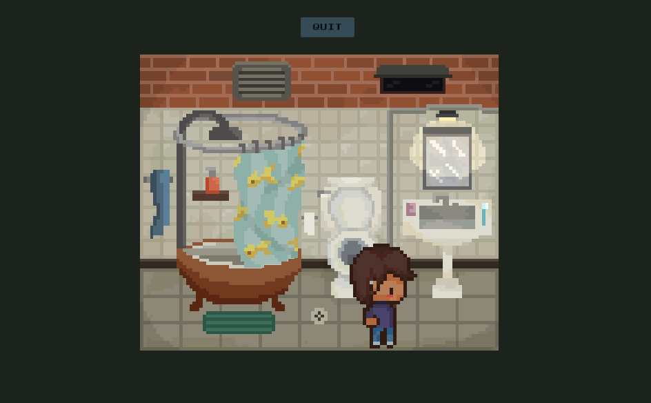
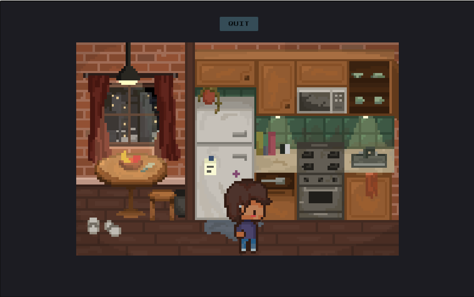
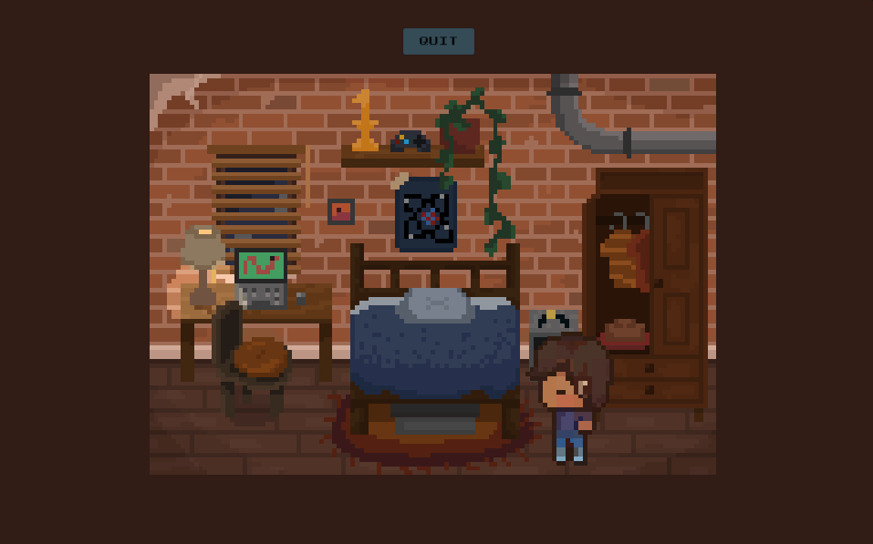
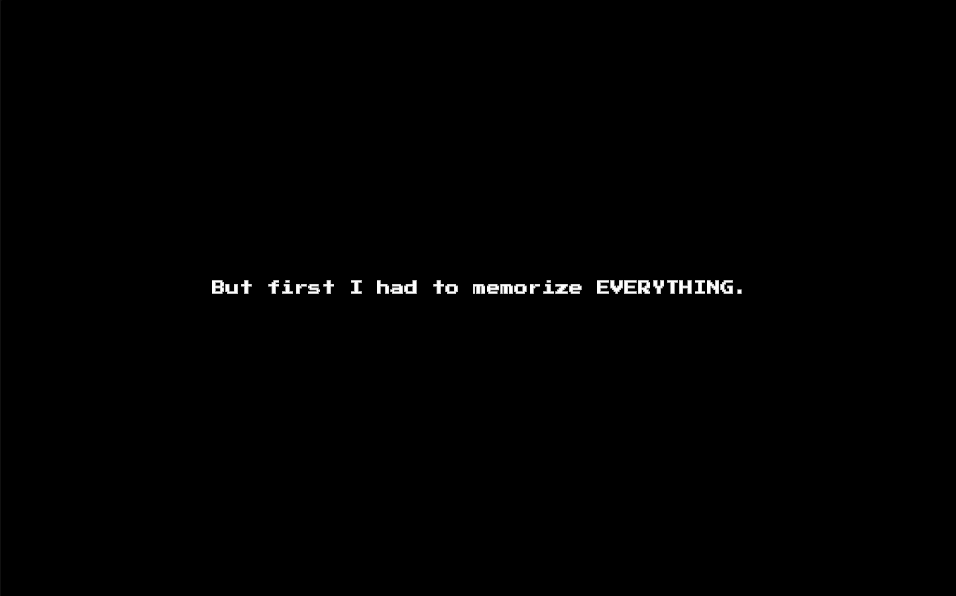
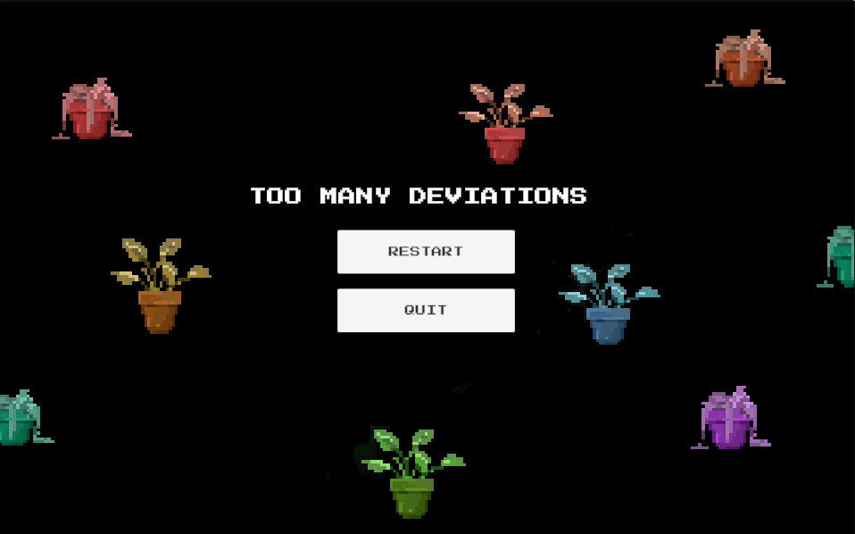
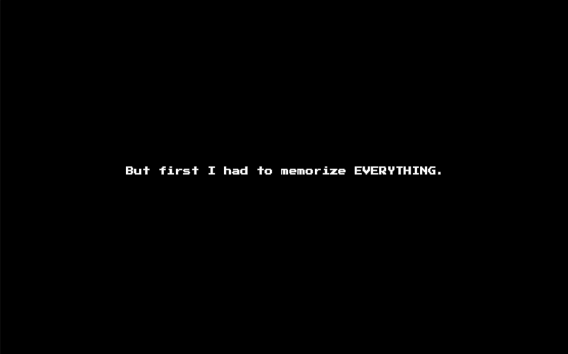
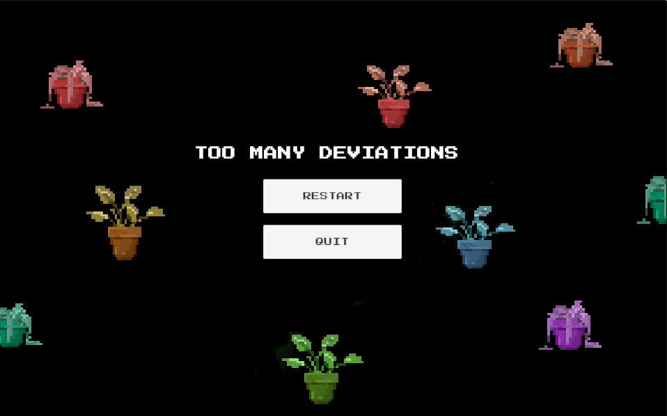
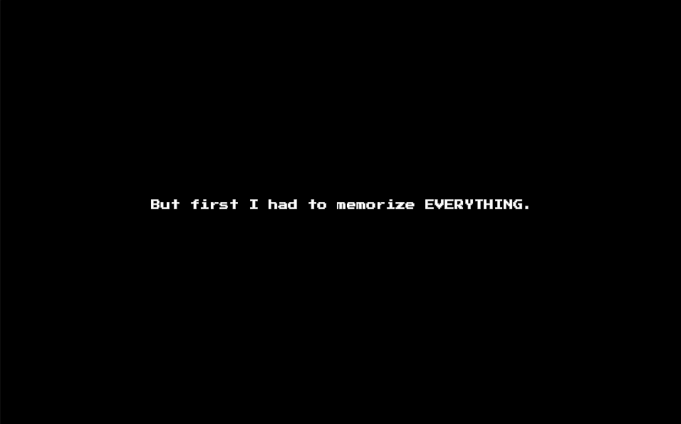
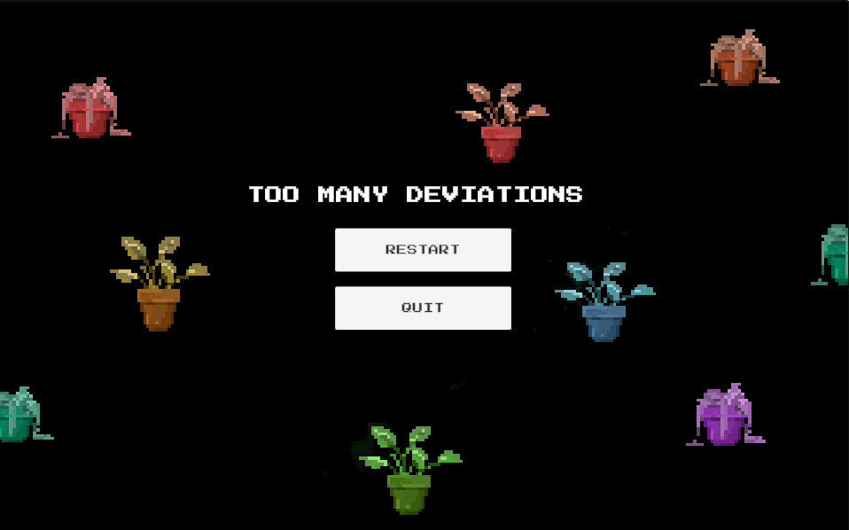

Superposition is meant to create a quick and suspenseful puzzle-like game, taking inspiration from observation and repetition. The player explores their house of changing objects and backgrounds, letting the sounds and music drive the feel while the dialogue hints at an underlying story. This game was created from scratch within 4 days for the GMTK Game Jam with the theme, 'Loop', in which over 9,700 other creators joined. Téa's contribution included game programming and user interface design, paired with her partner's environemnts assets and sound design.



 





Play on itch.io